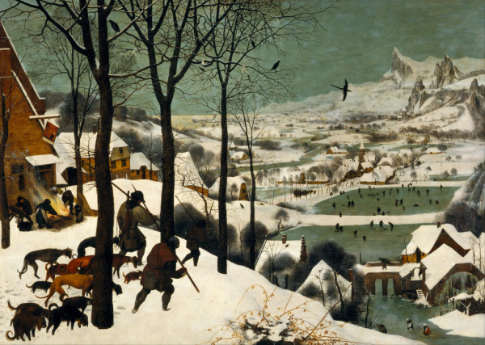

Classic : Autumn
- 
사냥꾼의 귀가(Hunters in the Snow)
캔버스에 유채, 162 × 117cm, 1565년
피테르 브뢰헬(Pieter Bruegel) 작
-
스케이트를 타는 겨울 풍경
(Winter Landscape with Ice Skaters)
나무에 유채, 78 × 132cm, 1608년
헨드릭 아베르캄프(Hendrick Avercamp) 작
-
빙해(The Sea of Ice)
캔버스에 유채, 96.7 x 126.9cm, 1823~1824년
카스파르 프리드리히(Caspar David Friedrich) 작
-
눈 내린 풍경(Landscape with Snow)
캔버스에 유채, 51 x 66cm, 19세기
피에르 오귀스트 르누아르(Pierre Auguste Renoir) 작
-
까치(The Magpie)
캔버스에 유채, 89 × 130cm, 1868~1869년
클로드 모네(Oscar Claude Monet) 작
-
하얀 서리(White Frost)
캔버스에 유채, 66 × 93cm, 1873년
카미유 피사로(Camille Pissarro) 작
-
아를의 눈덮인 들판(Landscape with snow)
캔버스에 유채, 38 x 46cm, 1888년
빈센트 반 고흐(Vincent van Gogh) 작
-
도로에 내리는 눈(Snow Falling in the Lane)
캔버스에 유채, 80 x 100cm, 1906년
에드바르 뭉크(Edvard Munch) 작